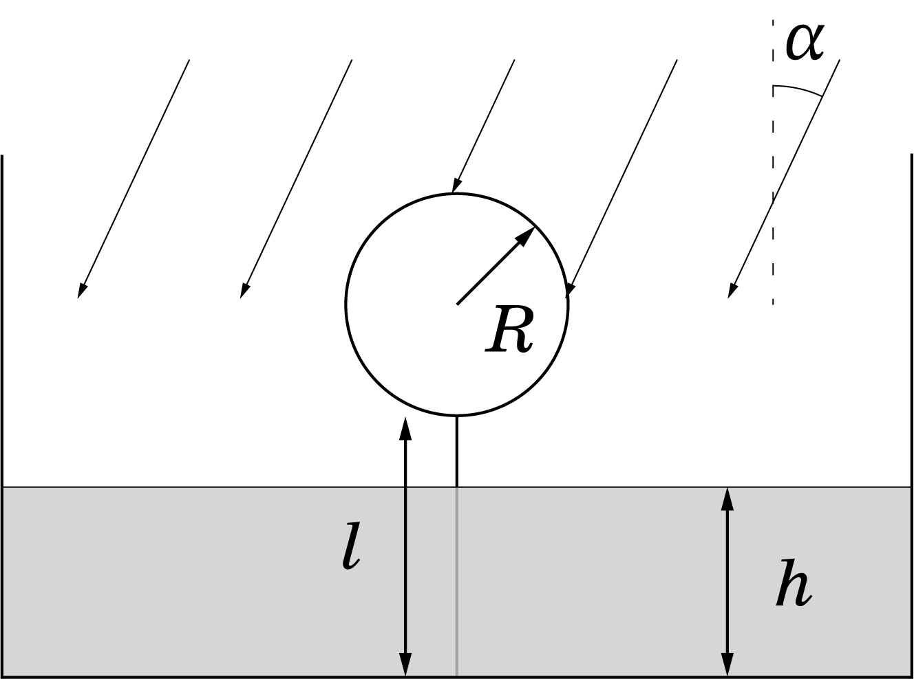
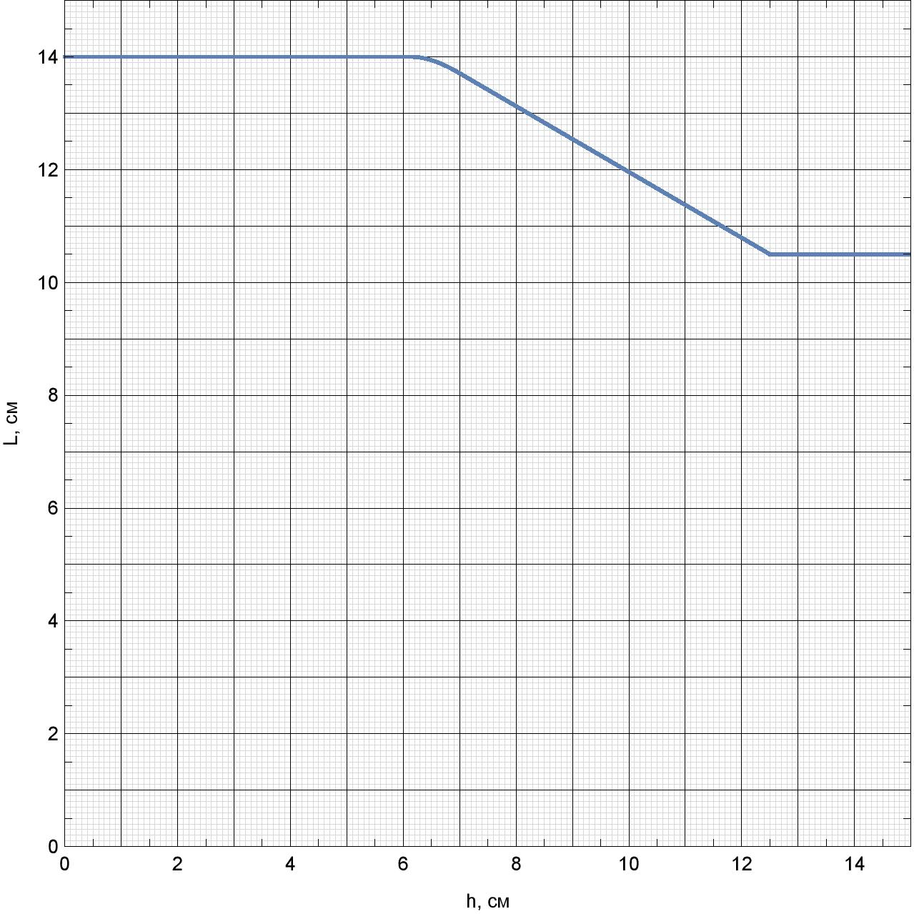

W21 (2021) — English translation
As part of this task, you will have to investigate how the length of the shadow of a light black ball tied to the bottom of a wide vessel with a thread and illuminated by sunlight depends on the level of transparent liquid $h$ in the vessel. The length of a shadow is defined as the maximum distance between its boundary points. Consider that the Archimedes force acting on the ball in the air is sufficient to keep the thread taut. In the future, use the following notations: Length of the thread $l$ Radius of the ball $R$ Angle of incidence of the rays on the surface of the liquid $\alpha$ Angle of refraction of the rays $\beta$ Length of the shadow $L$ The graph shows the dependence of the length of the shadow on the level of the liquid in the vessel.
In what follows, use the following notation:
The graph shows the dependence of the shadow length on the liquid level in the vessel.


Let $h_1$ be the water level in the vessel at the moment when the break begins in the graph.
Let $h_2$ be the water level at the moment when the kink turns into the linear section of the dependence.
Let $h_3$ be the liquid level at the moment when the length of the shadow stops changing.
Source: https://pho.rs/p/70